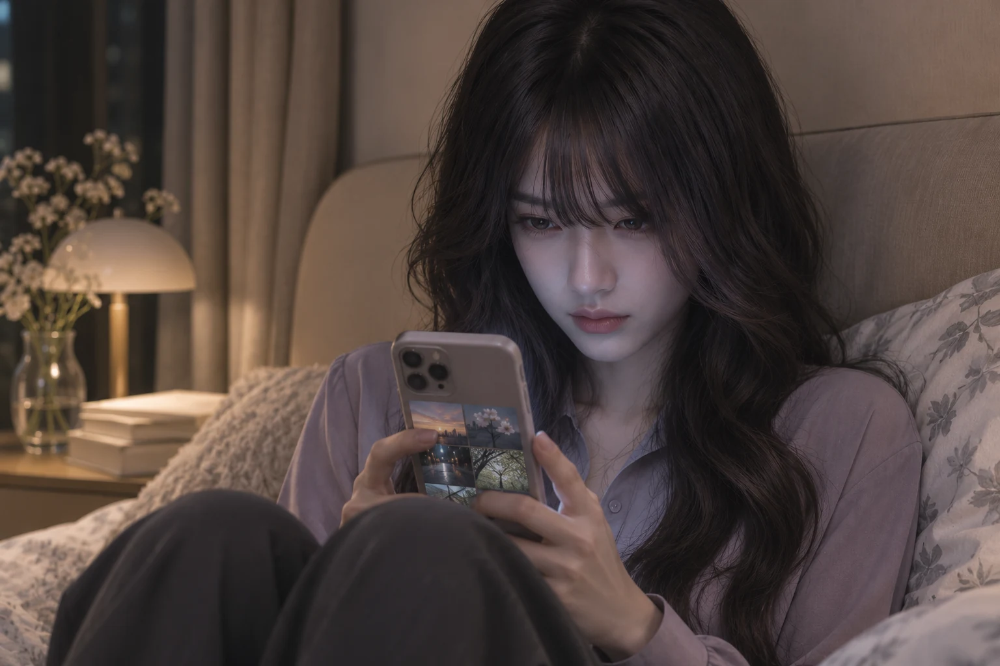
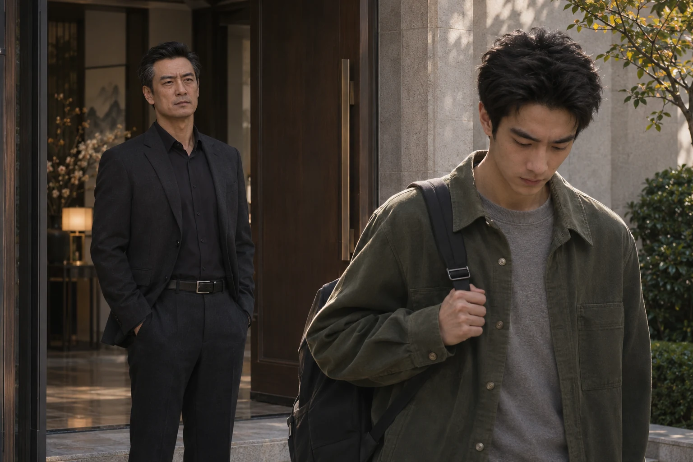
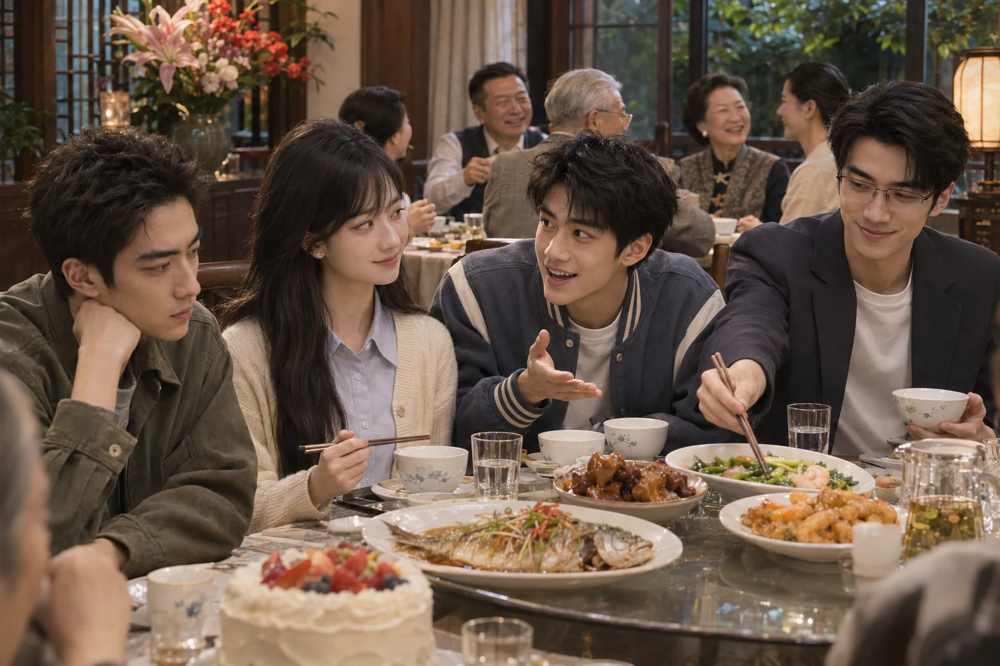
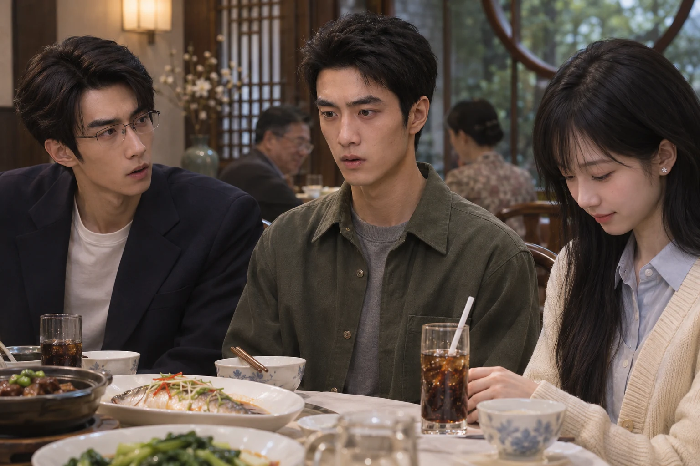
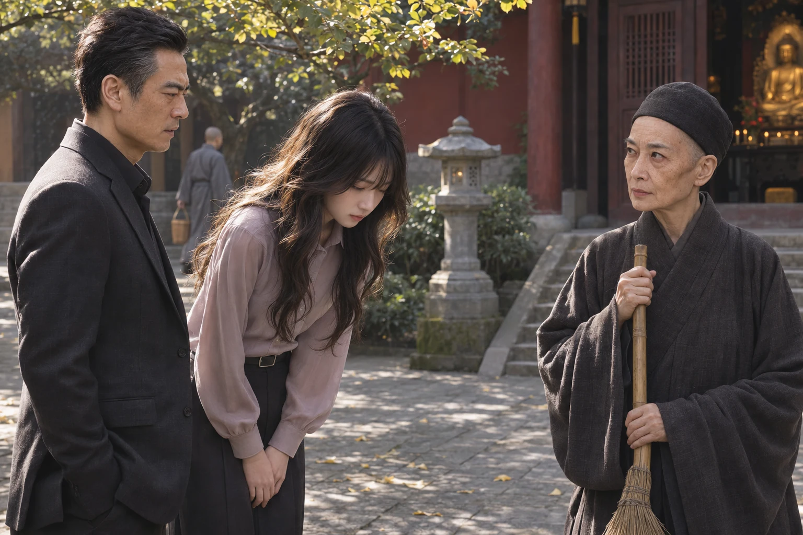

ตอนที่ 15
ไม้เด็ด?
ซ่งหว่านขอแยกตัวขึ้นห้องเพื่อจัดการธุระส่วนตัว ในอกเธอร้อนรุ่มแต่หาทางระบายออกมาไม่ได้ ความแพ้พ่ายครั้งนี้น่าเกลียดเกินไป หากห่างกันสิบคะแนน เธอยังพอปลอบใจตัวเองได้บ้าง แต่นี่ห่างกันแค่หนึ่งคะแนน เธอไม่สติหลุดก็ดีเท่าไหร่แล้ว
หญิงสาวนั่งสงบสติบนเตียง ก่อนกดเข้าบัญชีส่วนตัวในแอปพลิเคชันเว่ยป๋อของซ่งอวิ๋น อีกฝ่ายใช้บัญชีนี้ลงภาพถ่ายและขายภาพโดยไม่เปิดเผยตัวตน มีผู้ติดตามหลักแสนเพราะหลงใหลอารมณ์ในภาพถ่าย หลายคนต่างคาดเดาไปต่าง ๆ นานาว่าเจ้าของบัญชีต้องเป็นคนรวยแน่ เพราะบางสถานที่ที่เธอถ่ายภาพบรรยากาศมาลง ค่าเข้าแพงหูฉี่
เหตุผลที่ซ่งหว่านทราบว่าบัญชีนี้เป็นของซ่งอวิ๋น เพราะชาติก่อนมีชาวเน็ตขุดตัวตนซ่งอวิ๋นได้ ทำให้ทราบว่าเจ้าของบัญชีนี้คือคุณหนูผู้ล้มเหลวของตระกูลซ่ง เป็นคนรวยรุ่นสองไม่ได้เรื่อง ทำคะแนนสอบได้น้อยจนน่าสมเพช
ชาตินี้เปลี่ยนไปแล้ว ซ่งอวิ๋นไม่ใช่คุณหนูผู้เหยียบขี้ไก่ไม่ฝ่ออีกต่อไปแล้ว
“ชีวิตที่มีความสุขขนาดนี้ มันควรเป็นของฉัน” ซ่งหว่านกัดฟันกรอด เธอเชื่อมาตลอดว่าที่จริงแล้วเธอควรเป็นคุณหนูใหญ่ของตระกูลซ่ง

แม่ของเธอมาก่อน คบหาและรักกันยาวนาน เพียงเพราะไม่มีทรัพย์สินเงินทอง จึงต้องถอยให้กับผู้หญิงดูดีมาชาติตระกูล ดังนั้นคนที่เข้ามาแทรกกลางคือหญิงสกุลโจวผู้นั้นต่างหาก
ซ่งเหวินไม่รู้ว่าลูกสาวคิดอะไรอยู่ในใจ เขามีความสุขยิ้มน้อยยิ้มใหญ่ หลังจากส่งข้อความแสดงความยินดีให้ลูกสาวคนรองแล้ว เขายังสั่งให้คนรับใช้จัดงานเลี้ยงเล็ก ๆ กับลูกสาวสองคน
“ลุงใหญ่ไม่กลับไปฉลองกับคุณปู่จริง ๆ เหรอครับ” เจียงเซินถามขึ้นอย่างทำอะไรไม่ถูก
“ลุงก็อยากไปอยู่หรอกนะอาเซิน แต่ปู่ยังโกรธลุงมาก ถ้าลุงไปตอนนี้จะทำให้ปู่เขาโกรธเปล่า ๆ” ต่อให้เขาคิดไม่รอบคอบอย่างไร แต่ก็รู้ว่าความอดทนของผู้เป็นพ่อไม่ได้สูงเท่าไหร่นัก แต่เขาเองก็ยังมีไม้เด็ด
“…” เจียงเซินเห็นด้วย คุณตาโกรธลุงใหญ่จริง ๆ แต่โกรธจนไม่ดูดำดูดีหลานสาวคนโต เขารู้สึกว่าท่านทำเกินไปหน่อย
“เอาเถอะ ๆ อาเซินกลับไปได้แล้ว เดี๋ยวโดนหางเลขไปด้วย” เขาไม่อยากมีปัญหากับน้องรอง
“แต่ลุงฉลองกันแค่สองคน ผมไม่สบายใจ”
“เอาเถอะน่า มันจะไม่เป็นแบบนี้ไปตลอดหรอก”
“ครับลุงรอง งั้นผมกลับบ้านก่อนนะครับ” เจียงเซินเลิกดึงดัน ค้อมศีรษะแล้วออกจากบ้าน
ซ่งเหวินมองตามแผ่นหลังกว้างแล้วพ่นลมหายใจยาว ๆ ออกมา อย่างน้อยหลานจากตระกูลเจียงก็ยังมีความเห็นอกเห็นใจ ไม่ได้เห็นแก่ตัวและใจแคบเหมือนตระกูลซ่ง

…
ซ่งอวิ๋นถูกครอบครัวเอาอกเอาใจ ตักของอร่อยให้ทานตลอดงานเลี้ยงฉลอง เธอไม่ได้พูดคุยกับเจียงเซิน ส่วนมากจะคุยสัพเพเหระกับพี่ชายคนโตและน้องชายคนเล็กเสียมากกว่า ส่งผลให้เจียงเซินรู้สึกว่าตัวเองแปลกแยกจากบรรยากาศชื่นมื่นเบื้องหน้า
ชายหนุ่มขยับตัวอย่างอึดอัด คิดแทรกบทสนทนาอยู่หลายครั้ง สุดท้ายเขาก็ยังหาจังหวะไม่ได้เสียที
“พี่สามเก่งมากเลย อีกสองปีผมต้องสอบแล้ว พี่สามติวให้ผมหน่อยได้ไหม” ซ่งจื้อกะพริบตาปริบ ๆ เขาสดใสร่าเริงมาตั้งแต่เด็ก ๆ แม้ตอนนี้จะเริ่มเป็นหนุ่มแล้ว แต่นิสัยขี้อ้อนและพูดเก่งก็ยังอยู่เหมือนเดิม

ซึ่งซ่งจื้อไม่ได้ถูกซ่งเซวียนและเจินเหมี่ยวเลี้ยงดูอย่างเข้มงวด หรือสร้างความกดดันให้ลูกเกินไป ไม่ว่าจะเรื่องเรียน หรือเรื่องส่วนตัว พวกเขาปล่อยให้ลูกชายเป็นคนตัดสินใจเอง
ด้วยความที่ทั้งคู่ไม่ได้ต้องการให้ลูกชายเป็นหัวหน้าตระกูล หรือขึ้นเป็นประธานซ่งกรุ๊ปในอนาคต ตำแหน่งสูงก็ยิ่งแบกรับความคาดหวังและกดดัน ถึงจะเป็นหลานชายในตระกูลซ่งเพียงคนเดียวก็ตาม
“ได้สิ แต่นายก็เรียนเก่งอยู่แล้วนี่นา” ซ่งอวิ๋นไม่ปฏิเสธน้องชาย
อันที่จริงเธอต้องยอมรับว่าครอบครัวซ่งมีแต่คนเรียนเก่ง ขนาดน้องชายที่ติดเล่น คะแนนเฉลี่ยก็ไม่เคยตกเลย
“ถ้าเทียบกับพวกพี่ ยังห่างชั้นอยู่นะครับ” เด็กหนุ่มหัวเราะ เขาไม่ได้เครียดที่ตัวเองด้อยกว่าพี่ ๆ ในเรื่องเรียน เพราะเขาเองก็เป็นนักแสดงมาตั้งแต่เด็ก โตแล้วยังมีงานแสดงเข้ามาไม่ขาด
“เขาเรียกว่าคนเรามีความถนัดต่างกัน พวกเราก็ไปอยู่หน้ากล้องแบบน้องเล็กไม่ได้เหมือนกัน” เจียงซูอมยิ้มนิด ๆ
“นั่นสินะ นายเก่งมากเลย หาเงินได้ตั้งแต่เด็ก” ซ่งอวิ๋นหลุบตาลงมองแก้วน้ำอัดลมบนโต๊ะ นึกสะท้อนใจเนื่องด้วยสาเหตุที่ทำให้น้องชายตีตัวออกหาก เพราะเขาเข้าใจผิดว่าเธอเป็นคนทำให้เขาเสียชื่อเสียง อนาคตในวงการดับวูบ กลายเป็นข่าวฉาวโฉ่ระดับประเทศ
เธอพยายามบอกว่าตัวเองไม่ได้ทำ แต่หลักฐานทุกอย่างกลับชี้มาที่เธอจนดิ้นไม่หลุด
ว่าไปแล้วพี่สาวนอกสมรสของเธอช่างฉลาดและร้ายกาจ ยิ่งมีพระเอกโรคจิตหนุนหลัง ก็ยิ่งน่ากลัว
“พี่สามกำลังปลอบใจผมหรือเปล่าครับ ภาพถ่ายของพี่ขายได้หลักหลายหมื่นหยวน ล่าสุดผมเพิ่งเห็นว่ามีคนประมูลภาพถ่ายของพี่ไปแปดหมื่นหยวน แค่ขายภาพเดียวก็มากกว่าค่าตัวผมในแต่ละงานแล้วนะครับ” ซ่งจื้อทำปากยื่นพลางดึงแขนเสื้อคลุมตัวนอกของพี่สาวเล่นเบา ๆ
“ขายอะไร ทำไมพี่ไม่เคยรู้” เจียงเซินขมวดคิ้วมุ่น ไม่อยากเชื่อด้วยว่าภาพถ่ายของน้องสาวจะสร้างรายได้ เขาเห็นเธอถ่ายเล่นมาตั้งแต่เด็ก คุณปู่ตามใจถึงขั้นสร้างแกลเลอรีให้ เขายังมองว่านั่นมากไปแต่ไม่ได้พูดอะไร
“อ้าว แกไม่รู้เหรอ” เจียงซูประหลาดใจ “ภาพถ่ายของอวิ๋นเอ๋อร์ขายได้มาตั้งหลายปีแล้วนะ สงสัยแกมัวแต่ซ้อมดนตรีอยู่”
อันที่จริงวันนั้นที่ถกเถียงกันบนโต๊ะอาหารเรื่องซ่งหว่าน เขาก็อยากพูดตอกหน้าเช่นกันว่าซ่งอวิ๋นก็หาเงินได้ ไม่ใช่เด็กที่เอาแต่แบมือขอเงินพ่อแม่ แต่นึกว่าอีกฝ่ายรู้อยู่แล้ว แต่ยังเลือกยกย่องซ่งหว่าน กระทั่งมองไม่เห็นข้อดีและความสามารถของอวิ๋นเอ๋อร์
“ขายแล้วก็ได้ค่าขนมนิดหน่อยเองค่ะ” ซ่งอวิ๋นนึกถึงงานอดิเรกของตนเอง มันทำเงินได้มานานแล้ว เริ่มจากขอซื้อภาพถ่าย พอนานเข้าพวกเขาก็ต้องการประมูล
เธอไม่เข้าใจเหมือนกันว่าภาพที่เธอถ่ายสวยถึงขนาดต้องประมูลเลยหรือ ในทางกลับกันก็รู้สึกว่าพวกเขาชอบก็ดีใจ
“…” เจียงเซินพูดไม่ออก แค่ขายภาพเดียว ก็ได้เงินมากกว่าซ่งหว่านที่เหนื่อยตลอดทั้งเดือน ซ่งอวิ๋นเหนือซ่งหว่านทุกอย่างจริง ๆ ทั้งที่เป็นลูกสาวของลุงใหญ่เหมือนกัน ทำไมชีวิตถึงต่างกันราวฟ้ากับเหวเช่นนี้

ซ่งเซียงและซ่งเซวียนจับตาดูเด็ก ๆ จากโต๊ะข้าง ๆ วันนี้พวกเขาปล่อยให้เด็ก ๆ แยกไปนั่งอีกโต๊ะ เผื่อพวกเขาอยากพูดคุยกันตามประสา เห็นบรรยากาศไม่ได้ย่ำแย่เท่าที่คิด พวกเขาก็สบายใจขึ้น
“จริงสิครับพี่รอง พี่เขยเจียงยังไม่กลับอีกเหรอครับ” ซ่งเซวียนถามถึงพี่เขยอย่างสงสัย
รอบนี้ ‘เจียงกั๋ว’ ไปดูงานต่างประเทศนานเป็นพิเศษ เกรงว่าพี่รองจะเหงาและเหนื่อยที่ต้องดูแลลูกชายสองคน แถมยังต้องทำงานตัวเป็นเกลียวอีกต่างหาก
“เห็นว่าจะกลับอาทิตย์หน้า” ซ่งเซียงเองก็คิดถึงสามีเช่นกัน
“ดีเลยครับ ถ้าพี่เขยเป็นคนเตือน เจ้ารองอาจจะได้สติขึ้นมาบ้าง”
“นั่นสินะ พี่เองก็ลำบากใจเหมือนกัน ดีที่วันนี้เขาไม่สร้างเรื่องให้พี่ปวดหัว”
“…” ผู้เฒ่าซ่งไม่ได้เอ่ยสิ่งใด เพียงฟังเงียบ ๆ เท่านั้น ตราบใดที่เจียงเซินไม่ทำเกินไป เขาก็ยังไว้หน้าลูกสาว
…
วันต่อมา
แม่ชีจ้าวกวาดลานอาราม แสงแดดยามเช้าแทรกผ่านแมกไม้ ฤดูร้อนปีนี้ค่อนข้างร้อนกว่าปกติ ขนาดยังไม่ถึงเก้าโมงเช้า ยังร้อนจนแสบผิว
เมื่อจ้าวอิ๋นเงยหน้าขึ้นมาก็ชะงักไปเล็กน้อย ด้วยลูกชายคนโตยืนเคียงอยู่กับเด็กสาวนัยน์ตาหงส์คนหนึ่ง
“แม่ครับ” ซ่งเหวินจับจูงลูกสาวเข้าไปหามารดา ท่านคือไพ่เด็ดที่สามารถช่วยเหลือเขาได้ในเวลาเช่นนี้
“ประสกเหวิน พาใครมาน่ะ” หญิงชรากระชับด้ามไม้กวาดในมือ
ซ่งหว่านเผลอกลืนน้ำลายเหนียวหนืดลงคอ ท้ายทอยเธอเย็นวูบยามถูกสายตาจ้าวอิ๋นจับจ้องมา สายตาของอีกฝ่ายคล้ายมองทุกอย่างได้ทะลุปรุโปร่ง เป็นครั้งแรกที่เธอรู้สึกขนหัวลุกขนาดนี้เพียงเพราะถูกมอง
“แม่ครับ.. เด็กคนนี้คือเสี่ยวหว่าน เป็นลูกสาวของผมกับผิงเอ๋อร์” ซ่งเหวินพูดเสียงเบา พลางเสตามองไปทางอื่น
อันที่จริงแม่ของเขาก็ชอบฮวาผิงไม่น้อย ท่านไม่ได้กีดกันเขา หลายครั้งที่เขาพาฮวาผิงมาทานอาหาร ท่านก็จะดูแลว่าที่ลูกสะใภ้คนนี้เป็นอย่างดี ตอนที่เขาบอกว่าเลิกกัน ท่านยังตกใจไม่น้อย
ตอนนี้หากท่านรู้ว่าซ่งหว่านน่าสงสารขนาดไหน ท่านต้องช่วยพูดกับพ่อให้เขาอย่างแน่นอน
“สวัสดีค่ะ” ซ่งหว่านค้อมศีรษะอย่างนอบน้อม ทั้งที่ใจเธอไม่สงบลงเลย
“…” จ้าวอิ๋นจ้องทั้งคู่เงียบ ๆ ไม่ได้แสดงความโกรธเกรี้ยว แต่เป็นความสงบที่ทำให้คนถูกจ้องอึดอัด
ซ่งเหวินรีบอธิบายต่อ “ผมรู้ว่าผมผิดครับแม่ ตอนนี้พ่อลงโทษผมแล้ว แต่แม่ครับ ผิงเอ๋อร์ตายแล้ว ตอนนี้เสี่ยวหว่านเหลือแค่ผมคนเดียว ถ้าแม่จะโกรธผมก็ไม่เป็นไร แต่อย่าถือสาหลานเลยได้ไหมครับ”
“ตายจริงเหรอ..” แม่ชีชราบีบด้ามไม้กวาดแน่นขึ้น ใบหน้ายังสงบนิ่งดังเดิม สร้างความฉงนแก่สองพ่อลูก

“แม่ของหนูเสียแล้วจริง ๆ ค่ะคุณย่า” ซ่งหว่านสลัดความหวาดหวั่นแล้วยืนยันหนักแน่น
“แม่ครับ ตอนนี้พ่อโกรธมาก ผมอยากให้อาหว่านมีญาติผู้ใหญ่เอ็นดูสักคน เผื่อว่าผมเป็นอะไรไป..”